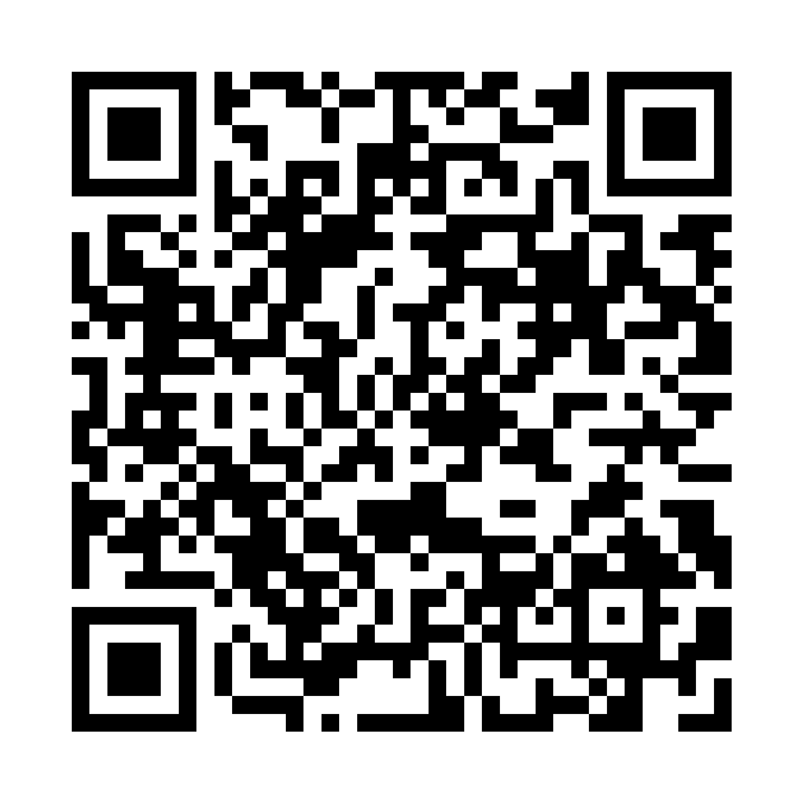

SEESKY · SKY ONE
Sky One 智能眼镜
使用说明
用两颗触摸键完成拍照、翻译、AI 分析与信息浏览。从开箱到熟练使用，只需几分钟。

扫码查看完整在线说明
https://seesky-ai-glasses.github.io/Manual/
在线版本会持续更新，内容以在线版为准。 · 版本 2026.08
01快速开始
第一次使用前，请先把眼镜充满电，并在手机上装好配套 App。
STEP 1充电并开机
用 USB-A 转 USB-C（Type-C）线充电，普通充电头即可，5V、500mA 或 1A 均可，约 1 小时充满。充满后，按随附卡片标注的方式打开眼镜。
STEP 2安装 App 并登录
在 App Store 或 Google Play 搜索「Seesky Glasses」安装。输入邮箱，收到验证码后即可登录，无需设置密码。
STEP 3连接眼镜
打开手机蓝牙，在 App 首页连接 Sky One，再给眼镜连上 Wi-Fi。完成后就可以开始拍照和翻译了。
拍照、翻译和 AI 分析需要 Wi-Fi。眼镜通过 Wi-Fi 把照片发出去处理。没有 Wi-Fi 时，可以打开手机热点让眼镜连接。
02连接眼镜：先连蓝牙，再连 Wi-Fi
蓝牙用来让手机和眼镜互相认识；Wi-Fi 用来传照片和拿结果。两步都在手机 App 首页完成。
A · 蓝牙连接
让手机找到眼镜
- 打开眼镜，打开手机蓝牙
- 打开 App，点击首页的「Sky One · 未连接」
- 在列表里选择 Sky One，等待变为「已连接」
- 连上后，首页会显示眼镜电量和版本
B · Wi-Fi 连接
给眼镜连上网
- 点击 App 首页的「WiFi」
- 选择类型：普通 WiFi / 手机热点、无密码 WiFi，或校园 WiFi
- 输入手机当前连接的 WiFi 名称和密码，点确认
- 稍等几秒，首页 WiFi 状态变为已连接即可
小提示：眼镜和手机最好连同一个 WiFi。外出时，打开手机热点，把热点名称和密码填进去即可。WiFi 只需设置一次，眼镜会记住。
03两颗键，完成所有操作
菜单键与确认键是镜腿上的两个触摸区域。外壳上的具体位置以实物标注为准。
M · 菜单键
切换 · 返回 · 向下
| 主菜单 | 短按切换功能 |
| 确认页 / 错误页 / 状态页 | 短按返回主菜单 |
| 结果页 | 短按向下滚动 |
OK · 确认键
打开 · 执行 · 向上
| 主菜单 / 确认页 | 短按打开功能或开始拍照 |
| 结果页 | 短按向上滚动 |
| 结果页 | 长按约 1.2 秒进入下一轮 |
核心规则：进入功能后，第一下确认键只是进入确认页，第二下确认键才开始拍照。看完结果后，长按确认键进入下一轮。
04主菜单的五个功能
在主菜单短按菜单键移动选择，短按确认键进入当前功能。拍照时请看向目标，保持右上角摄像头无遮挡。
AI Camera看见，并理解
拍下眼前画面，AI 会告诉你看到了什么。
1 选择 AI Camera → 2 确认进入拍照页 → 3 看向目标，再次确认 → 4 在眼镜中阅读结果
Photo把这一刻传到手机
拍一张照片，自动发送到手机 App，并保存到相册。
1 选择 Photo → 2 确认进入拍照页 → 3 看向目标，再次确认 → 4 在手机 App 相册查看
Translate眼前文字，随看随译
对准需要翻译的文字拍一张，译文直接显示在眼镜里。目标语言可在 App 中更改。
1 选择 Translate → 2 确认进入翻译页 → 3 对准文字，再次确认 → 4 滚动阅读译文
Focus安静的专注陪伴
在手机 App 开始 Focus，眼镜只在需要时给一句轻提醒。
1 在手机 App 开始 Focus → 2 眼镜自动运行 → 3 无需任何操作 → 4 在手机 App 结束
Status连接状态，一眼确认
查看蓝牙、Wi-Fi 和电量。
1 选择 Status → 2 确认进入 → 3 查看连接与电量 → 4 菜单键返回
05绿色提示，代表当前状态
Sky One 的提示会以绿色文字显示在右眼视野里。看到下面这些文字时，按建议操作即可。
| 显示 | 含义 | 现在怎么做 |
|---|
| 正在拍照 | 眼镜正在采集画面 | 保持头部稳定 |
| 正在上传 | 照片正在发送 | 保持眼镜连着 Wi-Fi |
| 正在识别 / 处理中 | AI 正在分析 | 稍等片刻，不要连续按键 |
| 结果页 | 分析或翻译已完成 | 菜单键向下、确认键向上滚动阅读；长按确认键进入下一轮 |
| 网络未连接 | 眼镜没有连上 Wi-Fi | 在手机 App 重新连接 Wi-Fi |
| 电量低 | 电量不足 | 充电后再继续使用 |
06Focus：专注，但不打扰
Focus 在手机 App 里开始和结束。运行期间你不需要碰眼镜，注意力偏离时，眼镜只会给一句短短的绿色提醒，比如「回到任务」。
- 开始、暂停、继续与结束都在手机 App 操作；眼镜运行时无需任何操作
- 右下角低亮度呼吸点，表示 Focus 正在运行；视野中下方出现短横线，是温和的注意力提醒
- 没有声音、没有震动，不会打扰身边的人
- 每次专注的时长和总结，在手机 App 里查看
07眼镜软件更新
我们会不定期推送新功能和稳定性修复。有新版本时，连接眼镜后 App 会自动弹出提示。
- 看到「发现新版本」——连接眼镜后 App 首页弹出更新提示。也可以在「设备状态」里手动点「检查更新」。
- 点「立即升级」——升级前请确认眼镜电量充足、已连上 Wi-Fi。升级期间保持眼镜开机并靠近手机，不要操作眼镜。
- 等待「更新完成」——App 会显示下载、安装进度。看到「更新完成」后，按提示重启一次眼镜即可正常使用。
升级失败不用担心：眼镜会自动恢复到原来的版本，不影响正常使用。稍后重新检查更新再试一次即可。
08遇到问题，先看这里
在眼镜的错误页，短按菜单键返回主菜单，短按确认键重新进入当前功能。大多数问题重启眼镜后都能解决。
- 手机找不到眼镜 / 连不上蓝牙
- 确认眼镜已开机、手机蓝牙已打开，并把眼镜放在手机旁边。重启眼镜后，在 App 首页重新点「Sky One」扫描连接。
- 眼镜显示「网络未连接」
- 在 App 首页点「WiFi」，检查 WiFi 名称和密码是否正确，重新确认一次。如果用的是手机热点，请确认热点已打开。仍然不行时，重启眼镜后再连接一次 WiFi。
- 上传失败 / 一直在处理中
- 通常是网络不稳定。换一个信号更好的 WiFi 或打开手机热点，然后短按菜单键回到主菜单，重新进入功能再试。
- 拍照失败
- 返回主菜单后重新进入功能；如果仍然失败，重启眼镜再试。请同时检查摄像头有没有被手指或头发遮住。
- 按键没有反应
- 拍照、上传、分析过程中眼镜会暂时不响应按键，这是正常的，请等状态结束。如果长时间没有任何显示，可能是电量耗尽，请先充电。
- 翻译结果的语言不对
- 在手机 App 里修改 Translate 的目标语言，眼镜连接后会自动同步。
- 还是解决不了？
- 打开 App，在「我的」页面选择「问题上报」，描述遇到的情况，我们会尽快联系你。
日常保养
充电请用 USB-A 转 USB-C（Type-C）线充电，5V、500mA 或 1A 均可，约 1 小时充满。充电时请不要佩戴眼镜。
摄像头摄像头在右镜片外上角。使用时保持无遮挡，定期用柔软的镜布轻轻擦拭。
防护避免进水、摔落和高温暴晒。请勿自行拆卸，也不要插接或拨动镜腿上的非充电接口。
在线说明：https://seesky-ai-glasses.github.io/Manual/ —— 扫封面二维码即可打开，内容持续更新。